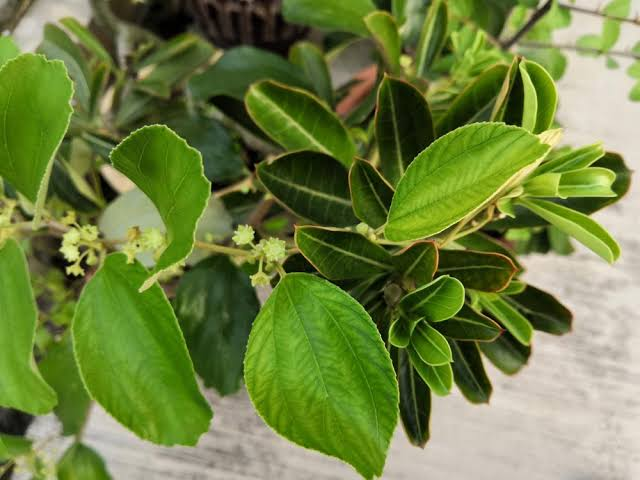

Kandungan Utama
- Flavonoid
- Saponin
- Tanin
- Alkaloid
- Vitamin C
- Polifenol
- Antioksidan alami
- Mineral alami


Nama Ilmiah : Ziziphus mauritiana Lam.
Daun bidara merupakan salah satu tanaman obat keluarga (TOGA) yang telah lama dimanfaatkan dalam pengobatan tradisional. Tanaman ini dikenal memiliki berbagai senyawa aktif seperti flavonoid, saponin, dan tanin yang berpotensi memberikan manfaat bagi kesehatan. Dalam pemanfaatan tradisional, daun bidara sering digunakan untuk membantu menjaga kesehatan kulit, mengurangi peradangan, meningkatkan daya tahan tubuh, serta membantu menjaga kesehatan sistem pencernaan.
Daun bidara memiliki berbagai manfaat bagi kesehatan berkat kandungan flavonoid, saponin, tanin, dan antioksidan alami. Secara tradisional, daun bidara dipercaya membantu mengurangi peradangan, melindungi tubuh dari radikal bebas, membantu mempercepat penyembuhan luka ringan, serta menjaga kesehatan kulit karena memiliki sifat antibakteri dan antijamur. Selain itu, daun bidara juga sering dimanfaatkan untuk membantu meredakan rasa gatal, menjaga kesehatan saluran pencernaan, membantu mengontrol kadar gula darah, meningkatkan daya tahan tubuh, serta memberikan efek relaksasi yang dapat membantu meningkatkan kualitas tidur apabila dikonsumsi dalam jumlah yang sesuai.
Daun bidara merupakan tanaman herbal yang digunakan secara tradisional. Konsumsi dalam jumlah yang wajar umumnya aman, namun manfaatnya untuk pengobatan penyakit tertentu masih memerlukan penelitian lebih lanjut. Ibu hamil, ibu menyusui, penderita penyakit kronis, maupun seseorang yang sedang mengonsumsi obat-obatan tertentu sebaiknya berkonsultasi terlebih dahulu dengan tenaga kesehatan sebelum mengonsumsi daun bidara secara rutin.
Scan QR Code berikut untuk membuka halaman informasi tanaman Daun Bidara.